Perceive consistency
We initialize 3D Gaussians and calculate per-view geometry-consistency maps to identify reflection-contaminated regions.
LOOK THROUGH. RECONSTRUCT BEYOND.
We introduce GlassGS, a geometry- and concept-aware framework that reconstructs objects behind reflective glass while preserving their geometry and appearance.
↓ A clearer perspective on 3D reconstruction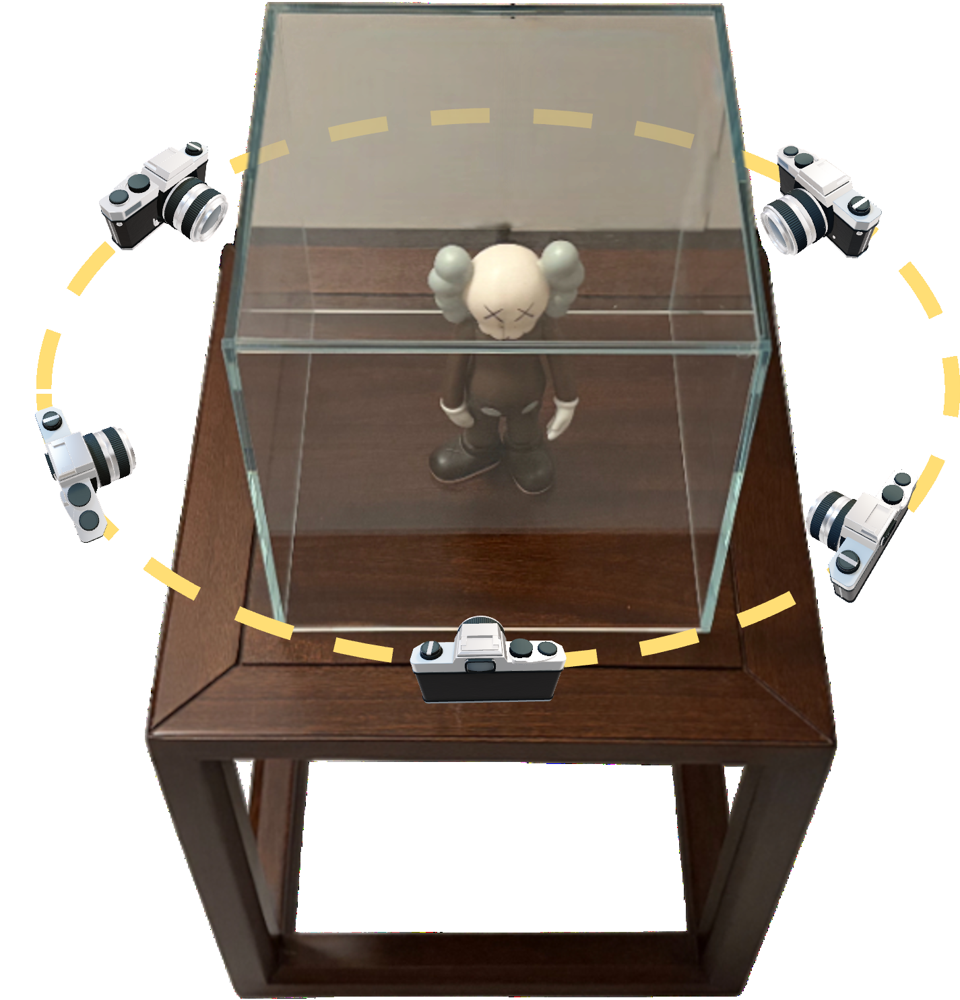
01 / THE CHALLENGE
We study the reconstruction of objects inside reflective glass enclosures, as commonly found in museums and exhibitions. Specular reflections change across viewpoints, violate multi-view consistency, and can be reconstructed as false geometry by 3D Gaussian Splatting.
We identify two complementary properties of these reflections—geometry inconsistency and concept preservation—and use them together to recover a more faithful representation of the enclosed object.
We measure appearance variations across views to identify regions affected by reflections through geometry-consistency maps.
We leverage the preserved object concept to guide restoration in reflection-contaminated regions.
02 / A CLEARER VIEW
Move the slider to compare a captured input
with the GlassGS reconstruction.
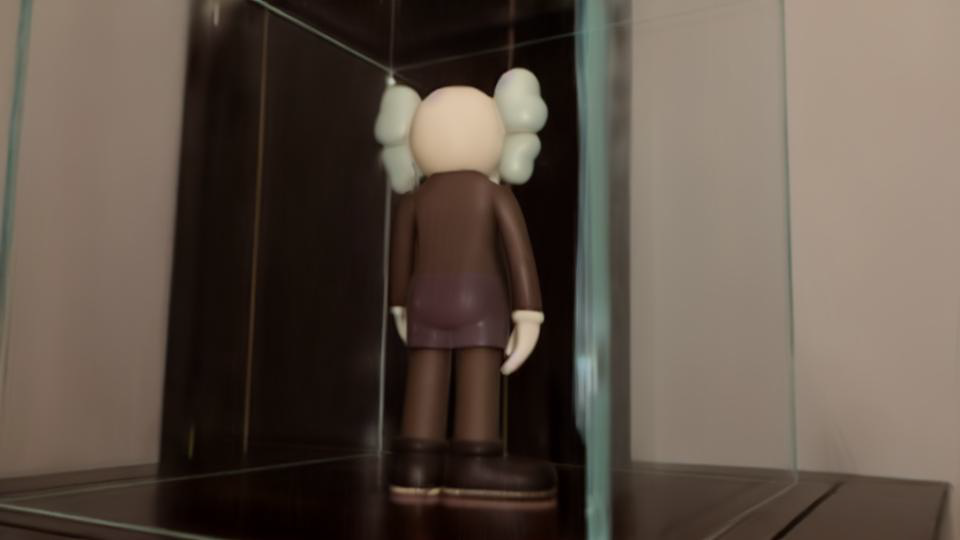
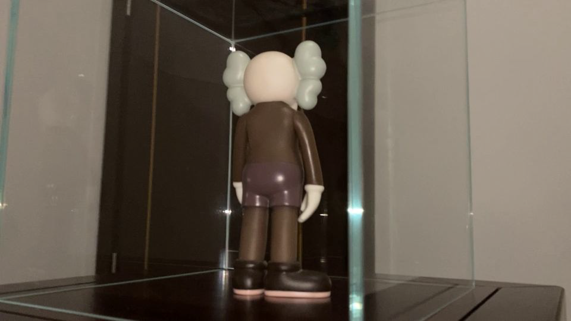
We reconstruct real-world objects across diverse materials, from plush textiles and plastics to porcelain.
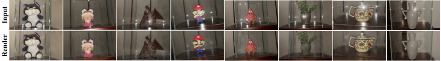
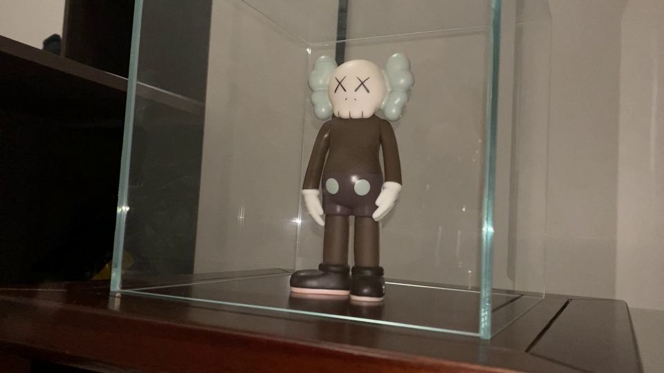
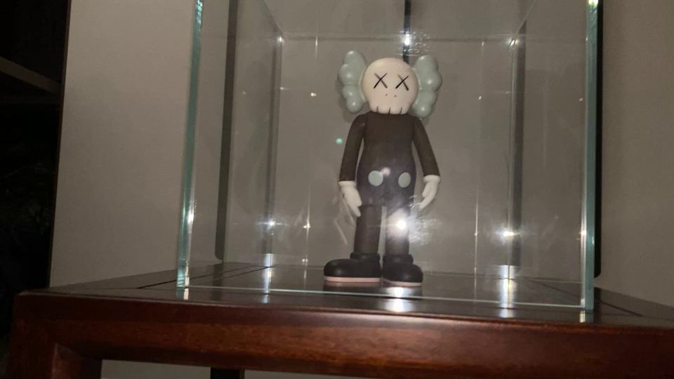
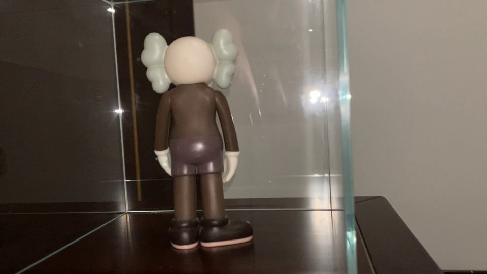
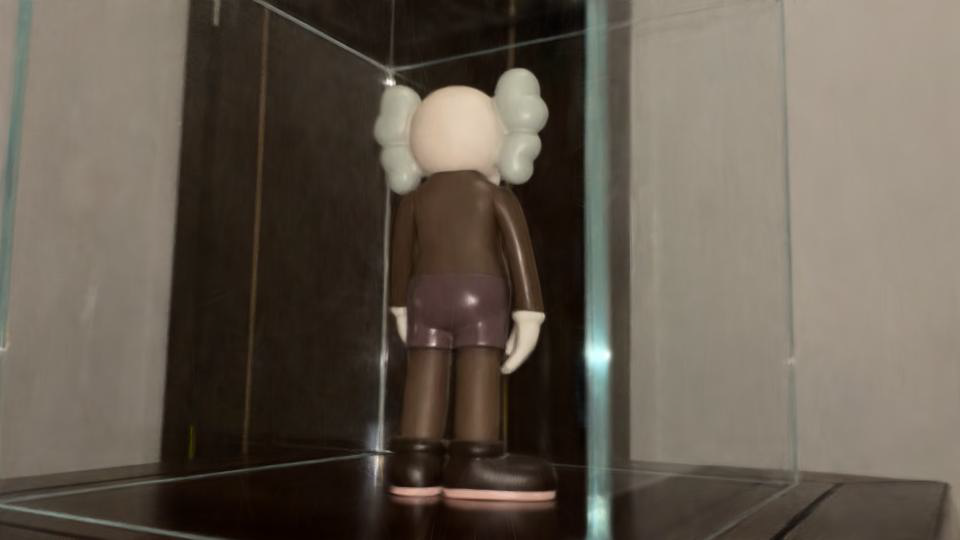
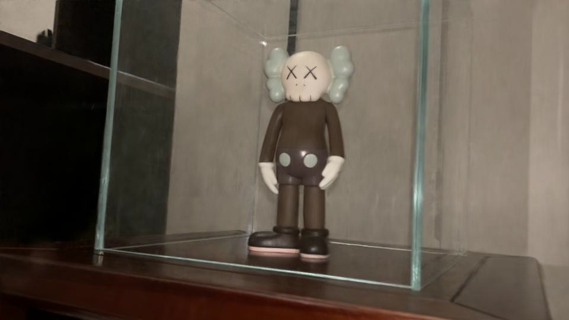
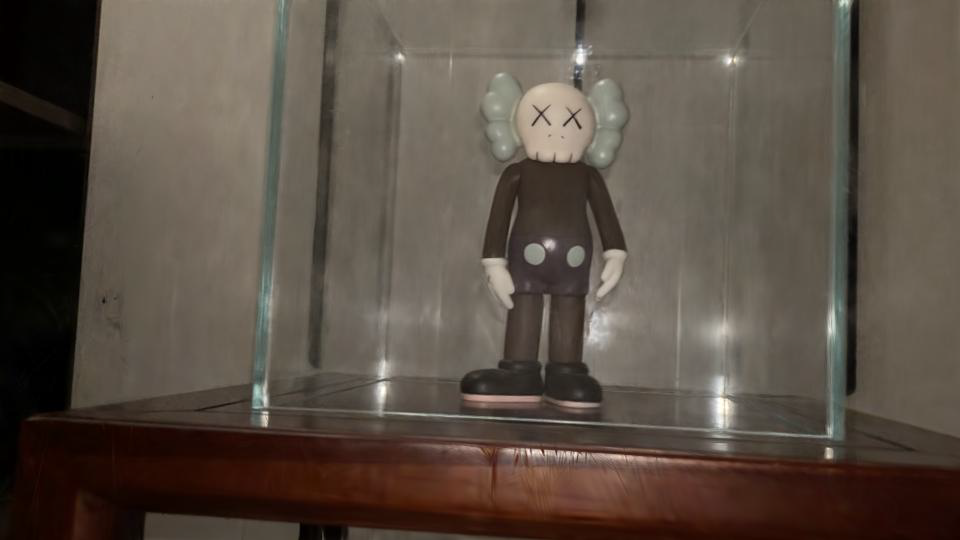
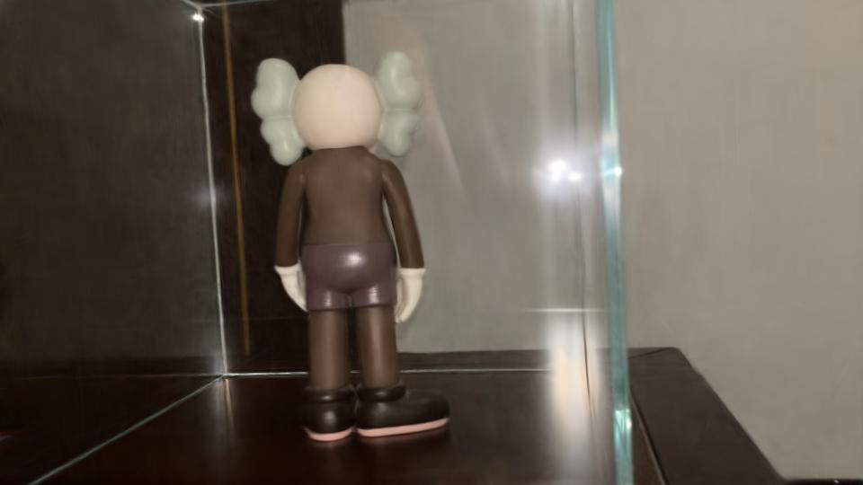
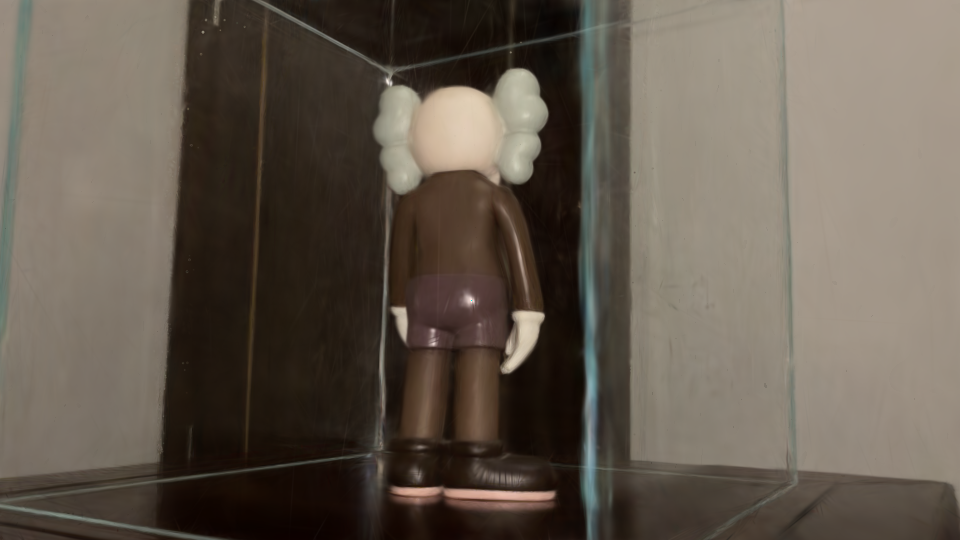
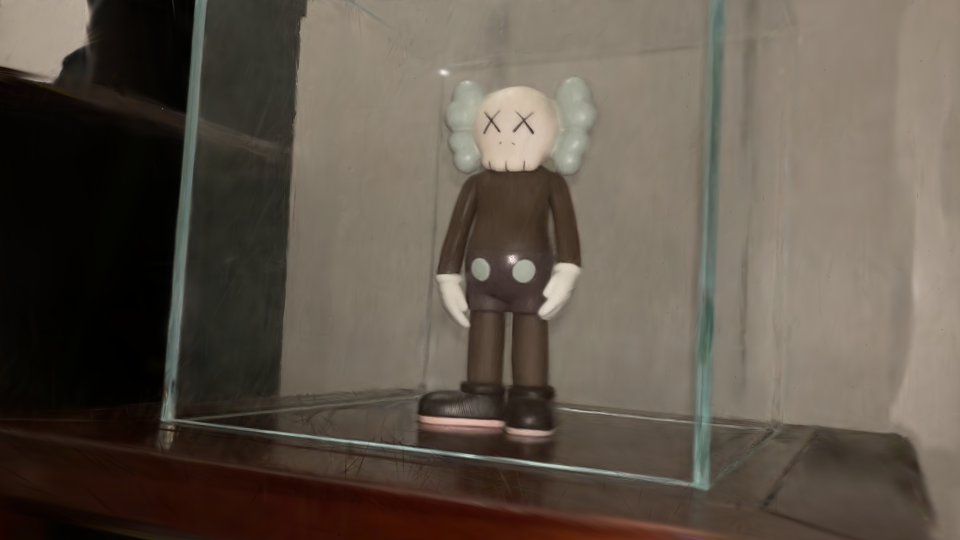
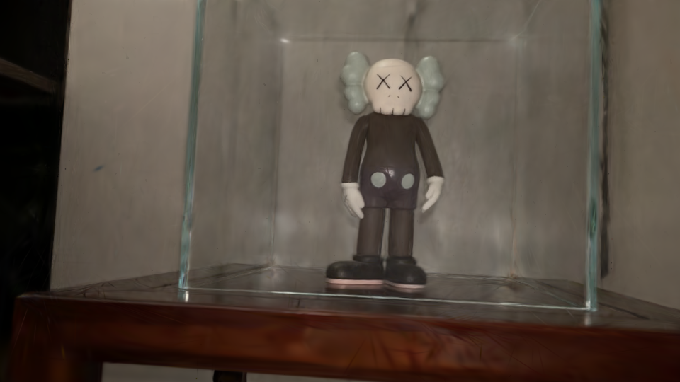
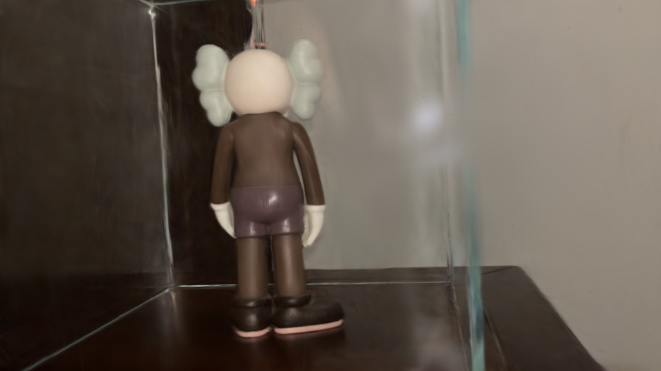
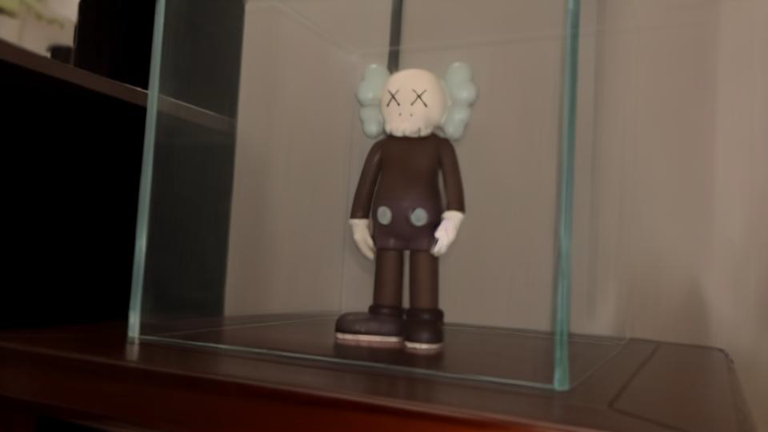
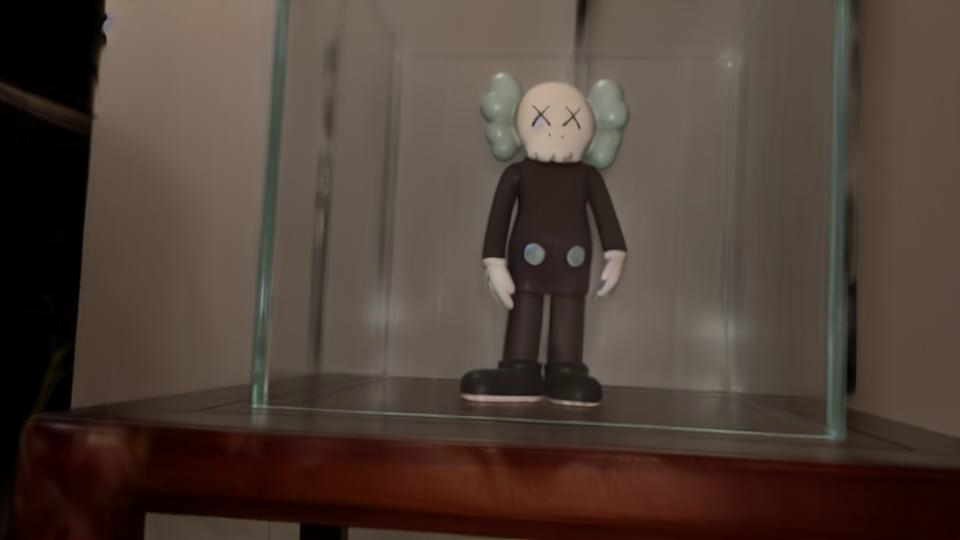
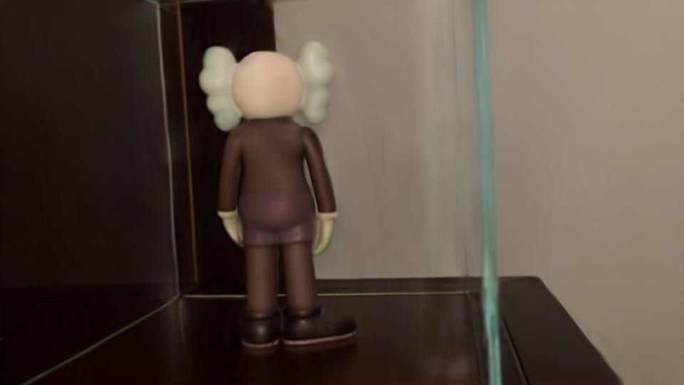
03 / MEASURED ON GLASSFLASH3D
Full-image quality and object-masked metrics
tell complementary parts of the story.
+1.77 dB over vanilla 3DGS
vs. 0.65 for vanilla 3DGS
32.59 → 24.68 vs. vanilla 3DGS
| Method | PSNR ↑ | SSIM ↑ | MAE ↓ | Mask PSNR ↑ | Mask SSIM ↑ | Mask MAE ↓ |
|---|---|---|---|---|---|---|
| Vanilla 3DGS | 15.38 | 0.62 | 36.05 | 17.17 | 0.65 | 32.59 |
| DSRNet + 3DGS | 15.90 | 0.65 | 33.30 | 16.91 | 0.68 | 32.67 |
| YTMT + 3DGS | 15.89 | 0.64 | 33.32 | 17.10 | 0.66 | 33.21 |
| SpotLessSplats | 15.90 | 0.66 | 33.92 | 17.75 | 0.69 | 30.82 |
| GlassGS OURS | 15.90 | 0.68 | 31.99 | 18.94 | 0.71 | 24.68 |
We report full-image and object-masked metrics to evaluate both scene reconstruction and target-object fidelity. Our method ties the best full-image PSNR and achieves the best values on the remaining metrics shown here. Bold marks the best value in each column.
| Method | PSNR ↑ | SSIM ↑ | MAE ↓ |
|---|---|---|---|
| IBCLN + 3DGS | 14.81 | 0.56 | 36.84 |
| ERRNet + 3DGS | 14.77 | 0.56 | 37.02 |
| RRW + 3DGS | 14.56 | 0.55 | 38.38 |
| GlassGS | 15.90 | 0.68 | 31.99 |
We additionally compare against IBCLN, ERRNet, and RRW by applying each reflection-removal method to individual views before 3DGS reconstruction. We report full-image PSNR, SSIM, and MAE.
| Method | PSNR ↑ | SSIM ↑ | MAE ↓ |
|---|---|---|---|
| YTMT | 20.92 | 0.85 | 21.45 |
| DSRNet | 21.71 | 0.87 | 19.01 |
| Consistency-guided diffusion | 22.56 | 0.89 | 18.07 |
We evaluate our consistency-guided diffusion module independently against single-image reflection-removal methods on our test images. This 2D restoration evaluation uses a different setting from the 3D reconstruction benchmark.
04 / THE METHOD
We initialize 3D Gaussians and calculate per-view geometry-consistency maps to identify reflection-contaminated regions.
We use geometry cues to guide object concept learning and restore regions affected by high specular reflections.
We reoptimize the reconstruction and recompute consistency maps, allowing the two stages to reinforce each other through iteration.

THE REFINEMENT LOOP
We use the consistency map as a soft reliability weight. We retain high-consistency regions of the original images as anchors and use restored content to guide unreliable regions, recomputing the maps after each refinement cycle.
We learn the object concept once, during the first iteration. In the example shown here, mean consistency increases from 0.89 to 0.91 over three iterations.

We ablate geometry-consistency perception (GCP), reflection-free concept learning (RFCL), and consistency weighting to examine how each component contributes to object reconstruction. Higher object-masked PSNR indicates better recovery.
Object-masked PSNR on GlassFlash3D. Bar scale: 16–19 dB (truncated); numerical values are shown explicitly.
05 / THE DATA BEHIND THE METHOD
We build two complementary datasets for
restoration learning and reconstruction evaluation.
We collect 23 real-world object scenes covering porcelain, plush textiles, smooth and coarse plastics, and other materials.
We physically remove the glass to capture clean reference views.
We synthesize 100,000 clean / contaminated image pairs to train our geometry-guided restoration module.
We combine backgrounds, reflective foregrounds, and specular flares to diversify training. Unseen real reflections can still introduce a domain gap.
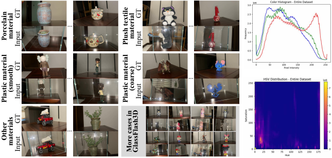
We also evaluate qualitatively on NeuS-HSR, where reflection-free ground-truth images are unavailable.
06 / EVIDENCE & OPEN QUESTIONS
We examine challenging cases and the limits
of our current reconstruction framework.
We investigate concept interference by concatenating images from two separate object scenes to simulate a two-object setting. Joint concept learning can mix their identities, so we recommend learning each object's concept separately. This experiment uses concatenated images rather than a physical capture of two objects in one enclosure.

We evaluate DC-Gaussian on a GlassFlash3D scene to examine transfer from driving-scene reconstruction to glass-enclosed objects. The example below shows its reconstructed views alongside the clean reference views. We present this as a qualitative case study, not an aggregate quantitative comparison.
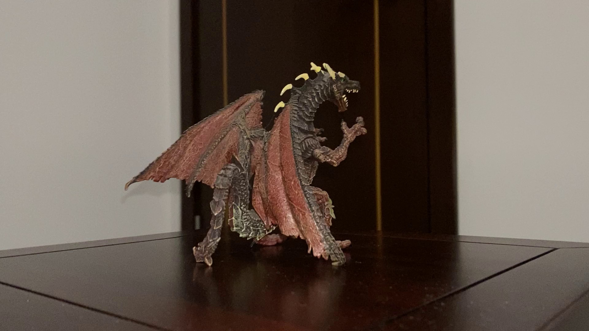
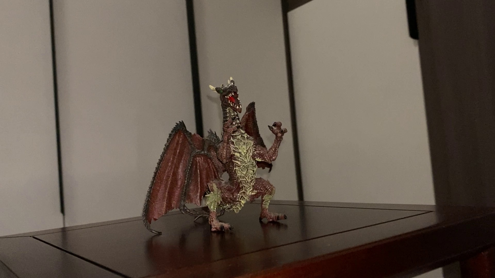
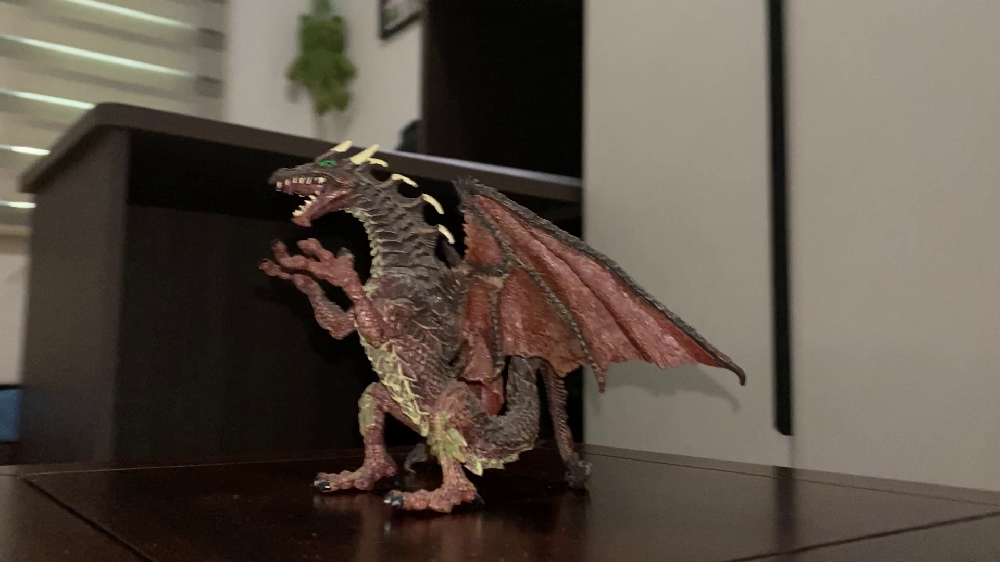
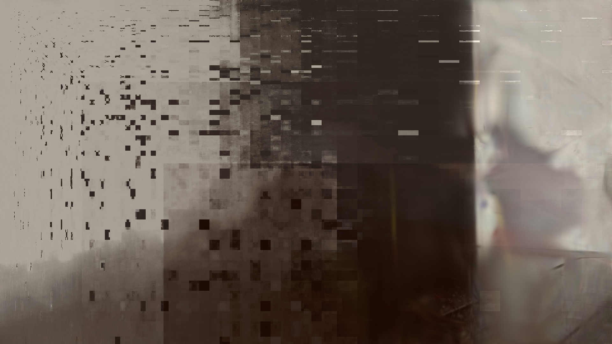
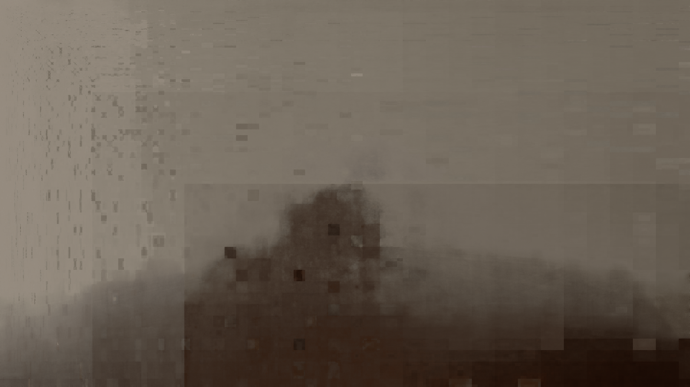
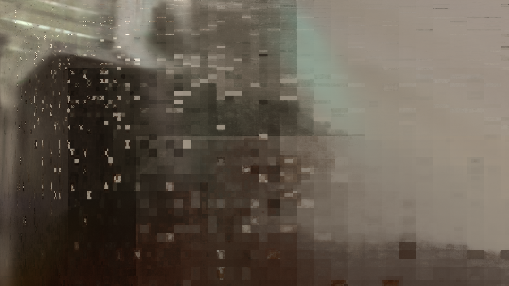
Our consistency measure may confuse legitimate view-dependent object highlights with glass-reflection artifacts.
Our framework remains sensitive to strong refraction from curved or thick glass, which can violate the assumptions of camera and point-cloud initialization and 3DGS reconstruction.
Our restoration module can leave artifacts under unfamiliar reflections or alter fine details during diffusion editing. We retain reliable source-image regions to constrain this drift.
07 / BUILD WITH GLASSGS
Generate geometry-consistency maps from your own multi-view scene. Find environment setup and the full refinement workflow in the repository.
Getting started ↗python train_with_mask.py \
-s [DATA_PATH] \
-m [OUTPUT_PATH]↳ Maps are saved in view_30000_confidence/
08 / CITATION
If you find our work useful, please consider citing our paper.
DOI: 10.1007/978-3-032-37432-5_7 ↗@inproceedings{cui2026glassgs,
title = {GlassGS: Geometry and Concept-Aware 3D
Gaussian Splatting for Reflective Enclosures},
author = {Cui, Mingxuan and Zhu, Yunrui and
Wang, Wuqi and Lin, Di and Zhang, Jianhua and
Zhang, Jie and Cheng, Ming-Ming and
Chen, Shengyong and Guo, Qing},
booktitle = {Computer Vision -- ECCV 2026},
year = {2026},
pages = {109--127},
publisher = {Springer Nature Switzerland},
doi = {10.1007/978-3-032-37432-5_7}
}